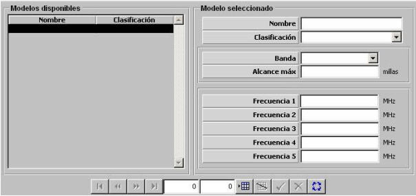

Equipos de Comunicaciones

Descripción de los parámetros:
Banda: Puede tomar los siguientes valores:
Este parámetro determina la banda en la que trabaja el equipo de comunicaciones. Es tenido en cuenta para calcular el alcance de este equipo, determinar con quién puede establecer comunicación.
Alcance Máximo: Este parámetro determina un límite máximo para el alcance de los equipos de comunicaciones tipo UWT. Sólo podrá ser introducido si se ha seleccionado Banda UWT.
Unidades: millas
Rango: 0 – 9999
Frecuencia Principal: Este parámetro determina la frecuencia principal el la que opera el equipo de comunicaciones. La frecuencia introducida deberá estar dentro de los márgenes correspondientes a la banda seleccionada. Ver tabla más adelante.
Unidades: MHz
Rango: 0 – 99999
Frecuencia Alternativa 1 a 4: Estos parámetros determinan cuatro frecuencias alternativas que podrán ser seleccionadas por el operador en el equipo de comunicaciones. Las frecuencias introducidas deberán estar dentro de los márgenes correspondientes a la banda seleccionada. Ver tabla más adelante.
Unidades: MHz
Rango: 0 – 99999
| Banda | Margen de Frecuencias |
| HF | 2 – 30 MHz |
| VHF | 30 – 300 MHz |
| UHF | 225 – 3000 MHz |
| SATCOM | 1000 – 99999 Mhz |
| UWT | 2 – 20 Khz |